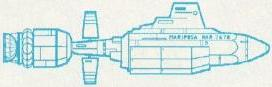
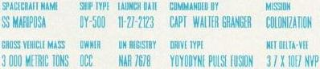

Terrestri - Classe DY-500 |
|  |
| SS Mariposa lanciata dalla Terra nel 2123, comandata dal Capitano Walter Granger. | Up the Long Ladder | La Mariposa era la nave che portava Martin Eden a Tahiti
nell'omonimo romanzo di Jack London. «Mariposa» significa «farfalla» in spagnolo. |